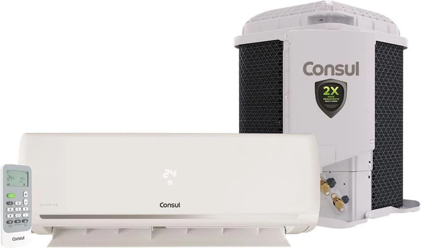

O Ar-condicionado Split Consul Triple Inverter EconoMaxi é 100% mais eficiente*, pois conta com a tecnologia Triple Inverter, que possui dois motores DC Inverter e um compressor DC Inverter. Além disso, possui exclusiva tecnologia EconoMaxi que facilita a troca de calor na serpentina, tornando o produto mais eficiente e reduzindo o consumo de energia. Ele é mais silencioso que uma biblioteca**, e ainda, possui garantia de 1 ano no produto e 3 anos no compressor e no condensador.